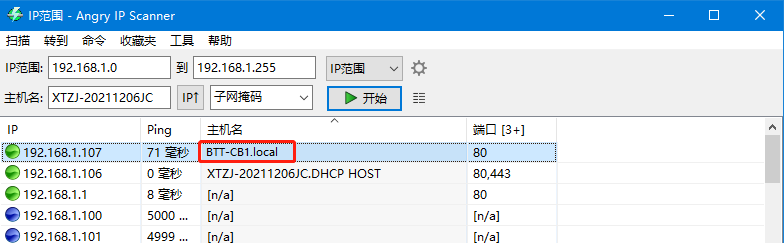
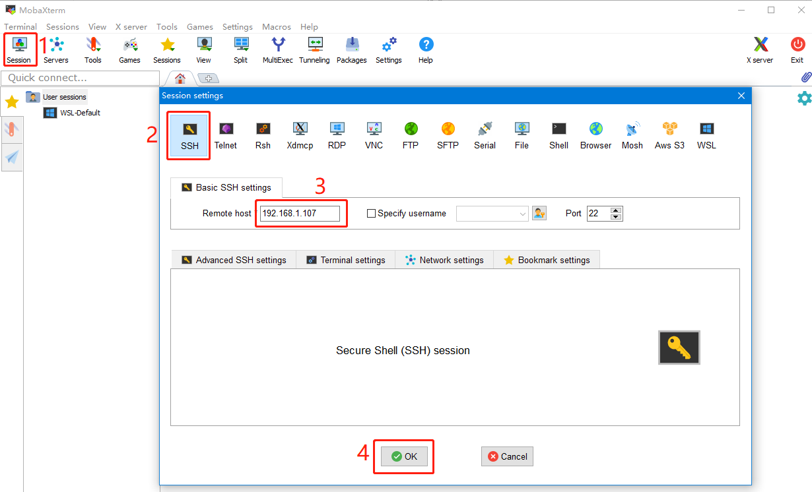

SSH connect to CB1
- Install the ssh application Mobaxterm: https://mobaxterm.mobatek.net/download-home-edition.html
- Insert the Micro SD card (installed OS) to motherboard, wait for system to load after power on, aprox. 1-2min. the ACT LED on the motherboard will flash continuously after startup successfully.
- The device will automatically be assigned a IP address after successfully connected to the network
- Find the device IP address in your router page
- Or use the https://angryip.org/ tool，scan all IP address in the current network organize by names, find the IP named Hurakan, BTT-CB1 like shown below

- Open Mobaxtermand click “Session”, and click “SSH”，inset the device IP into Remote host and click “OK” (note: your computer and the device needs to be in the same network)

- Input the login name and password to enter the SSH terminal interface
- login as: biqu
- password: biqu